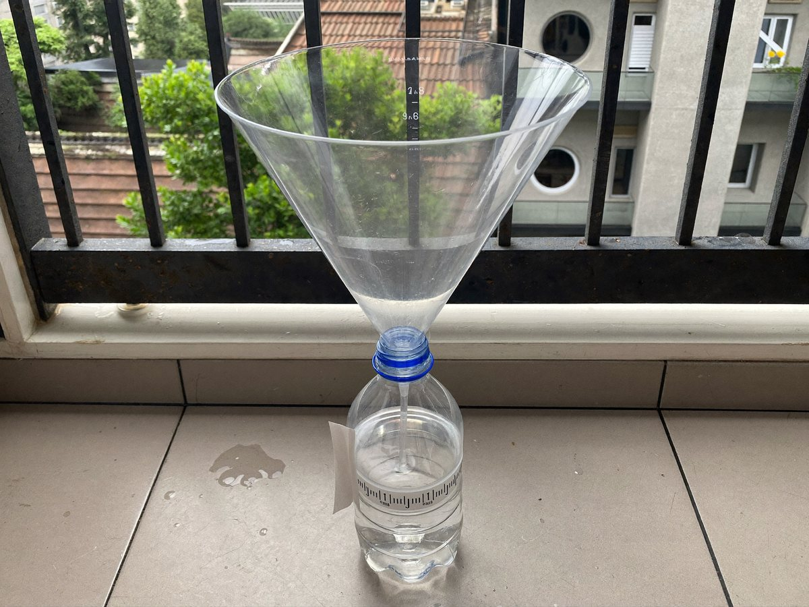

페트병 빗물 측정기

페트병으로 우량계를 만들어 비가 얼마나 왔는지 재고, 일기 예보의 강수량과 비교해요.
만들기 30분 · 측정 2주 · 난이도 ★★☆ 보통
준비물
- 원통 모양 페트병 — 몸통이 곧은 생수병. 모양이 울퉁불퉁하면 정확하지 않아요
- 자갈이나 구슬 — 병 바닥에 넣어 넘어지지 않게 해요
- 눈금 띠 도안 — mm 눈금 띠를 인쇄해 붙여요
- 투명 테이프, 가위 — 눈금 띠를 붙여요
실험 방법
- 병 자르기
페트병 윗부분(어깨 부분)을 잘라 내요. 잘라 낸 윗부분을 거꾸로 끼우면 깔때기가 돼요. - 바닥 채우기
바닥에 자갈을 넣고, 자갈 위까지 물을 부어 수평을 맞춰요. 이 물 높이가 0이에요. - 눈금 붙이기
도안의 눈금 띠 0을 물 높이에 맞춰 병 옆에 붙이고 투명 테이프로 덮어요. - 밖에 두기
나무나 지붕 아래가 아닌 탁 트인 곳에 두어요. 바람에 넘어지지 않게 돌로 받쳐요. - 재고 비우기
비가 그치면 늘어난 높이를 mm로 읽어 기록표에 적고, 다시 0까지 물을 맞춰요. 일기 예보의 강수량과 비교해요.
관찰해 봐요
- 병이 넓으면 빗물이 더 많이 모일 텐데, 높이는 어떻게 될까요?
- 내가 잰 값과 일기 예보의 강수량은 얼마나 비슷한가요?
- 비가 오기 전날 하늘과 바람은 어땠나요?
왜 그럴까?
강수량은 비가 땅에 고였을 때의 높이를 mm로 나타낸 거예요. 몸통이 곧은 병이라면 병이 넓든 좁든 고이는 물의 높이는 같아서, 병 높이로 비의 양을 잴 수 있어요.
학교 교육과정 연결
- [6과06-01] 기상 요소를 조사하고, 날씨가 우리 생활에 주는 영향을 인식할 수 있다.